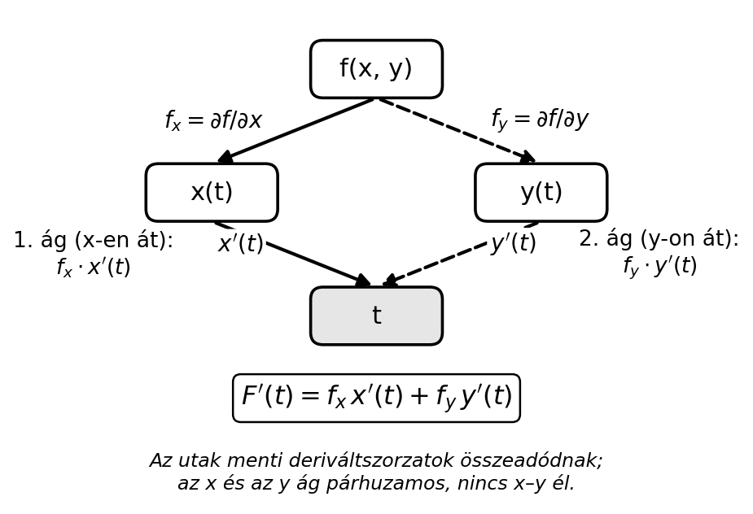

Egy drón repül át egy mező fölött. A mező minden pontjában ismerjük a
levegő hőmérsékletét:
,
ahol
és
méterben adott. A drón pályája az időben ismert:
és
.
A drón hőmérője a saját helyén méri a hőmérsékletet, tehát a mért érték
.
A kérdés: milyen gyorsan változik a drón által mért hőmérséklet
az időben? Ez már nem egyváltozós összetett függvény, hanem
két láncon keresztül függ
-től:
függ
-től
és
-tól,
ezek pedig
-től.
Az egyváltozós láncszabályból azt várjuk, hogy a belső deriváltak itt
is megjelennek, de most két út miatt a tagok
összegződnek. Az alábbiakban ezt pontosítjuk, és
megadjuk az általános többváltozós láncszabályt is.
22.3.2 Szemléletes kép: a függőségi
fa
Rajzoljuk fel, hogyan függ
a
változótól:

A láncszabály függőségi fája:
két párhuzamos ágon,
-en
és
-on
keresztül függ
-től
A fa azt fejezi ki, hogy
először
-t
és
-t
határozza meg, majd
ezeken keresztül
-től
függ. Mivel két ág van, a deriváltban két tagot kell
összeadni: az egyik az
-en,
a másik az
-on
keresztüli változást méri. Ha
megváltozik
-val,
akkor
is és
is megváltozik, és
mindkét változásra reagál.
Kis számszerű illusztráció: legyen
,
,
.
Ekkor
,
tehát
.
A láncszabály szerint később látni fogjuk, hogy
ami a
helyen
.
A két tag kioltja egymást, hiszen a függvény értéke nem változik.
22.3.3 A tétel görbe mentén
Emlékeztetőül a totális differenciálhatóságról: az
függvény totálisan differenciálható az
pontban, ha léteznek az
és
parciális deriváltak, továbbá
Tétel. Tegyük fel, hogy
és
differenciálható a
pontban, és
totálisan differenciálható az
pontban. Ekkor az
függvény differenciálható
-ban,
és
Gyakran röviden:
Bizonyítási terv. A klasszikus bizonyítás a totális
differenciálhatóság definíciójából indul ki: felírjuk az
megváltozását a kicsiny
változásokkal, majd a különbségi hányadost
-val
osztva határértéket számolunk. A hibás tagot azért tudjuk kezelni, mert
,
és a maradék
korlátos marad.
Bizonyítás. Jelölje
,
.
Mivel
és
differenciálható
-ban,
Legyen
A totális differenciálhatóság miatt
ahol
,
ha
.
Osszuk el
-val:
Az utolsó tagban
Mivel
,
,
ez a gyök
-hez
tart, tehát korlátos. Ugyanakkor
,
így
,
ezért a hibatag határértéke
.
A limesz tehát
amit bizonyítani akartunk. ∎
Megjegyzés. Ha
parciális deriváltjai folytonosak az
pont egy környezetében, akkor
ott totálisan differenciálható, így a tétel feltétele teljesül. Ez a
leggyakoribb eset a gyakorlatban.
22.3.4 Az általános alak és a
mátrixalak
Most legyen
és
,
tehát
két közvetett változón keresztül függ
-tól
és
-től:
Ekkor a görbe menti esetet külön-külön alkalmazva, a másik
változót rögzítve, kapjuk a parciális deriváltakat:
Tétel. Ha
és
parciálisan differenciálhatóak, és
totálisan differenciálható a megfelelő pontban, akkor
Rövidebb indexelt jelöléssel:
ahol
-t
az
pontban kell venni.
Ezt a két egyenletet mátrixalakban is felírhatjuk:
Ez éppen a Jacobi-mátrixok szorzatának az
egyváltozós láncszabályban látott mintáját általánosítja: a külső
függvény Jacobi-mátrixa szorozva a belső függvény Jacobi-mátrixával. A
mátrixos formát a Jacobi-mátrix, Hesse-mátrix és
többváltozós Taylor-formula alfejezetben fejtjük ki teljesen.
22.3.5 Számolási recept
Recept: összetett függvény parciális deriváltjainak
kiszámítása
Azonosítsd a változókat. Írd fel, hogy
mely változóktól függ, és ezek mely változóktól függenek. Rajzold fel a
függőségi fát.
Válaszd ki a deriválási változót. Ha például
szerint deriválsz, akkor keresd a fán az összes utat
-tól
-ig.
Minden útra írd fel a megfelelő parciális deriváltak
szorzatát. Az egyik út
,
a másik
.
Add össze az utakhoz tartozó tagokat.
Helyettesítsd be az értékeket. Ha konkrét pontban
kell a derivált, számold ki
értékét, majd
-t
abban a pontban.
Ellenőrzés. A deriváltat ellenőrizhetjük úgy, hogy
közvetlenül behelyettesítjük
-t
és
-t
az
-be,
majd az így kapott
-t
szerint deriváljuk. Ha a két eredmény megegyezik, a láncszabályt jól
alkalmaztuk.
22.3.6 Polárkoordináták: a
láncszabály koordináta-transzformációkban
A láncszabály egyik leggyakoribb alkalmazása, amikor egy függvényt új
koordináta-rendszerben írunk át. Legyen
adott, és térjünk át polárkoordinátákra:
Az új függvény legyen
Az általános láncszabály szerint:
és
Röviden:
Figyeljünk arra, hogy
és
az új függvény parciális deriváltjai, tehát
és
mindig az
pontban értendő.
Gyakran szükség van a fordított irányra is: az
és
kifejezésére
és
segítségével. Ehhez oldjuk meg a fenti két egyenletet
-re
és
-ra:
Tegyük fel, hogy az
egyenlet definiálja
-t
az
függvényeként, vagyis
.
Ha a kapott
függvény azonosan nulla, akkor
.
A láncszabály szerint:
Ebből, ha
:
Ez a jól ismert implicit differenciálási szabály.
Pontos egzisztenciafeltételt (amikor tényleg létezik ilyen
)
az Implicit és inverz függvény tétele
alfejezetben tárgyaljuk.
Példa. Tegyük fel, hogy az
egyenlet határozza meg
-t
az
függvényeként a
pont közelében. Itt
,
tehát
,
.
A képlet szerint
A
pontban
,
ami összhangban van a kör geometriájával: az érintő meredeksége
.
22.3.8 Valós életbeli
alkalmazás
Drón hőmérsékletmérése. Egy mező fölött a levegő
hőmérsékletét (kelvinben) a
modell írja le, ahol
és
méterben adott. Egy drón pályája az időben:
ahol
másodpercben. Kérdés: milyen gyorsan változik a drón által mért
hőmérséklet a
másodpercben?
A mért hőmérséklet
.
A láncszabály szerint:
Számítsuk ki a parciális deriváltakat:
A pálya deriváltjai:
A
másodpercben:
Ekkor
és
A láncszabályból:
Tehát a drón által mért hőmérséklet
másodpercben másodpercenként
kelvinnel csökken (a mező a pálya mentén néhány kelvinen belül
változik). Az eredményt értelmezzük: a térbeli hőmérséklet-gradiens
a melegebb terület (itt az origó) felé mutat; az időbeli változás a
gradiens és a drón sebességének skaláris szorzata,
.
Mivel a drón a gradienssel tompaszöget bezáró irányba repül, a mért
hőmérséklet csökken. A modell korlátja, hogy a hőmérsékleti mező és a
drón pályája is idealizált; valóságban szél, turbulencia és turbulens
hőáramlás is befolyásolja az értéket.
Ellenőrzés. Helyettesítsük be a pályát a
hőmérsékleti képletbe:
A derivált:
A
helyen:
ami megegyezik a láncszabállyal kapott értékkel.
22.3.9 Python-illusztráció
A láncszabályt numerikusan is ellenőrizhetjük. Vegyük az
függvényt és az
,
pályát. Ekkor
,
így a pontos derivált
.
A láncszabály szerint:
A Python-kód összehasonlítja a láncszabályos értéket a numerikus
differenciálással kapott értékkel.
A két érték 6 tizedesre kerekítve megegyezik (a teljes eltérés kb.
).
Ez a numerikus ellenőrzés nem bizonyítás, de jól mutatja a láncszabály
helyességét. A numerikus derivált hibája a kerekítésből és a központi
differencia
csonkolási hibájából adódik.
22.3.10 Tipikus hibák
A belső deriváltak kihagyása. Gyakori hiba:
A helyes alak
.
A
és
szorzók nélkül az eredmény mértékegysége sem stimmel, hiszen
egysége például
,
nem
.
Polárkoordinátás deriválásnál az
tényező elfelejtése. A
szerinti deriváltban szerepel
és
.
Ha ezekből kimarad az
,
a
képlete hibás lesz.
Implicit deriválásnál az előjel hibája. A helyes
formula
.
A mínuszjel abból adódik, hogy a konstans
deriváltja és a láncszabály összege
,
nem pedig
.
A régi és új koordináták szerinti parciális deriváltak
összekeverése. Polárkoordinátákban
,
hanem
.
Az
és
a Descartes-féle koordináták szerinti parciális deriváltak, míg
és
az új változók szerintiek.
22.3.11 Önellenőrzés
Ha
,
,
,
akkor
?
Válaszolj indoklással.
Legyen
,
,
.
Mi
és
?
Polárkoordinátákban igaz-e, hogy
?
Az
egyenlet implicit módon definiálja
-t.
Add meg
-et
a láncszabállyal.
22.3.12 Feladatok
1. feladat (A). Legyen
,
,
.
Számítsd ki
-t
általánosan, majd a
pontban.
2. feladat (A). Legyen
,
,
.
Számítsd ki
és
értékét az
pontban.
3. feladat (B). Legyen
.
Írd fel
-t,
és számítsd ki
-t
és
-t.
Ellenőrizd az eredményt közvetlen deriválással. Fejezd ki
-t
és
-t
és
segítségével.
4. feladat (B). Az
egyenlet implicit módon definiálja
-t
az
függvényeként. Add meg
-et
a láncszabállyal.
5. feladat (C). Bizonyítsd be: ha
konstans minden
-re,
akkor az
és
parciális deriváltakból alkotott
vektor minden
-ben
merőleges a pálya
sebességvektorára. (Ez előkészíti a gradiens szintvonalakra való
merőlegességét az Iránymenti derivált és
gradiens alfejezetben.)
6. feladat (D). Ideális gáz nyomása
,
ahol
mól,
.
A térfogat
,
a hőmérséklet
,
ahol
másodpercben. Számítsd ki
értékét a
pillanatban. Értelmezd az eredményt.
22.3.13 Megoldások
Önellenőrzés – válaszok
Nem. A láncszabály szerint
.
Az
nem helyes, mert hiányoznak a belső deriváltak.
,
így
.
Hasonlóan
,
így
.
Igen.
,
ezért
.
,
tehát
,
így
.
1. feladat megoldása.
Itt
,
.
A pálya deriváltjai:
,
.
A láncszabály:
A
-nál
.
(Közvetlenül is:
,
deriváltja
.)
2. feladat megoldása.
,
.
A koordinátatranszformáció deriváltjai:
Az általános láncszabály:
Az
pontban
,
,
ezért
3. feladat megoldása.
,
így
,
.
Közvetlenül a láncszabállyal:
,
,
ezért
A fordított irányú képletek:
ami megegyezik a várt
-nal.
4. feladat megoldása.
Legyen
.
Ekkor
,
.
A láncszabályból:
5. feladat megoldása.
Mivel
konstans,
minden
-re.
A láncszabály szerint:
A jobb oldal éppen az
és
vektorok skaláris szorzata. Ha két vektor skaláris
szorzata nulla, akkor merőlegesek (feltéve, hogy egyik sem nullvektor).
Ezzel az állítást beláttuk. Ez az eredmény azt mutatja, hogy a gradiens
merőleges a szintvonalra, hiszen a pálya a szintvonalat
paraméterezi.
6. feladat megoldása.
A láncszabály:
A parciális deriváltak:
A deriváltak:
A
-nál
,
.
Így
A láncszabály:
Tehát a nyomás kezdetben másodpercenként kb.
pascallal csökken, mert a térfogat növekedése csökkenti a nyomást, a
hőmérséklet növekedése növeli, de a térfogat-hatás erősebb.
22.3.14 Rövid összefoglaló
Ha
totálisan differenciálható és
differenciálható, akkor az
függvény deriváltja